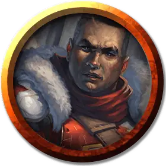

Полевой медик
Frontline Medic
Средний Гуманоид (Любая раса), законно-добрый

Класс Доспеха 20 (латы, щит)
Хиты 19 (3к8 + 6)
Скорость 30 футов
| мод | спас | ||
|---|---|---|---|
| СИЛ | 15 | +2 | +2 |
| ЛОВ | 10 | +0 | +0 |
| ТЕЛ | 14 | +2 | +2 |
| мод | спас | ||
|---|---|---|---|
| ИНТ | 10 | +0 | +0 |
| МДР | 13 | +1 | +1 |
| ХАР | 12 | +1 | +1 |
Навыки Восприятие +3, Медицина +5
Чувства пассивное Восприятие 13
Языки один любой язык (обычно Общий)
Опасность 1/4 (50 опыта)
Бонус мастерства +2
Особенности
Использование заклинаний. Медик является заклинателем Боросов 3-го уровня. Его базовой характеристикой заклинаний является Мудрость (Сл спасброска от заклинания 11). У медика подготовлены следующие заклинания жреца:
• Заговоры (неограниченно): починка [mending], сопротивление [resistance], уход за умирающим [spare the dying];
• 1 уровень (4 ячейки): лечение ран [cure wounds], убежище [sanctuary];
• 2 уровень (2 ячейки): подмога [aid], малое восстановление [lesser restoration].
Действия
Копьё. Дальнобойная или рукопашная атака оружием: +4 к попаданию, досягаемость 5 фт. или дистанция 20/60 фт., одна цель. Попадание: 5 (1к6 + 2) колющего урона или 6 (1к8 + 2) колющего урона, если используется двумя руками для рукопашной атаки.
Описание
Солдаты Легиона Боросов зависят от опытных целителей, которые помогают им остаться на ногах. Медики на передовой используют смесь магического исцеления и житейской медицины, чтобы сохранить жизнь своим союзникам.